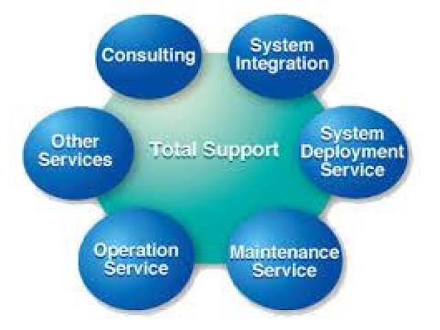
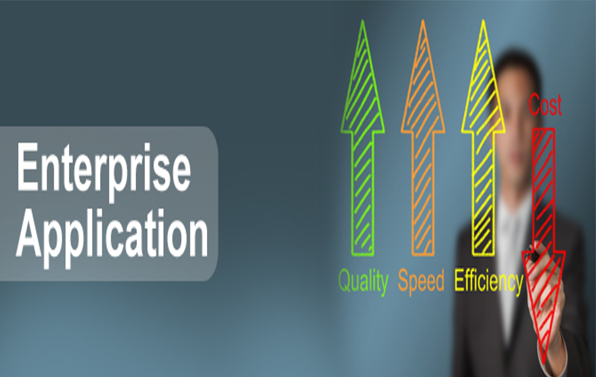

This involves the design and complete integration of Physical security requirement of facilities and it includes security protection such as surveillance (CCTV), access control, electric fencing, biometrics, Fire prevention and detection systems e.t.c
IP BASED surveillance solution by GKB Security
This is an innovative solution that makes surveillance a more interactive system with features such as : ability to view cameras remotely with free integrated VaaS (Video as a Service ) which allows viewing surveillance on Ipad, Iphone, Internet explorer and roid system etc, with good High Definition cameras, integration with access control, motion detectors , integration with E-map makes GKB a unique solution e.t.c.
VFDS(Video Fire Detection System)
This is good for highly volatile environment where traditional fire detection system cannot be used and this system allows video images to be analysed for smoke or fire and with pop up screen of where the incident happened. This is good because it also helps reduce false fire alarms in sensitive environment.
VERIFeye Mobile Monitoring System
This is a solution that helps monitor and record video of events happening in Buses, Taxis or private cars: cameras are deployed in the vehicles and connected to the mobile dvr and gps gadget for recording and remote viewing, the video can be downloaded via usb connection to pc or wireless connection.
Mcafee Total Endpoint Security:
Mcafee is the number one endpoint security company in the world with their security suite being used by most of the fortune 500 companies. Total protection includes point products such as;
- Anti-malware
- Endpoint encryption
- Host Intrusion prevention
- NAC
- Email encryption
- Data loss prevention
- Full disk encryption
- Server Security suite
Mcafee SAAS (Security as a service) Protection:
McAfee SaaS Integrated Suites protect against viruses, spyware, web threats, and other attacks on PCs, laptops, and file servers, while freeing your IT staff from complex deployments, upgrades, and security management. This means that your IT staff can have time for other daily task that requires their attention.
Mcafee Security management suite:
McAfee Security Management is the industry's most comprehensive approach to managing enterprise security. As the core of our Security Connected framework, McAfee Security Management solution delivers complete integration between the McAfee ePolicy Orchestrator (McAfee ePO) software, McAfee Risk Advisor, and McAfee Endpoint solutions. This tight integration enables you to gain complete visibility of security and risk events across any on-premises or hosted desktop, network, or server Powered by McAfee ePO software, the open, extensible architecture of McAfee’s Security Management Platform creates a flexible deployment environment that allows you to plug in new applications as the need arises. You can tie IT systems and change management tools into your security solutions and automate tasks, policies, and workflows across McAfee and third-party products.
Computer Network play a major role in the effectiveness and productivity of most organisations where it is the internet, LAN, WAN, VLAN etc also since most application are network based, performance of these networks and application needs to be regularly monitored and we have partnered with Solarwinds to deliver an array of network/application monitoring solutions such as;
Solarwind NPM (Network Performance Monitor):
Solarwinds APM (Application performance Monitor)
Solarwinds Netflow Traffic Analyser
Solarwinds Log and Event manager
Virtualisation manager
Visit: www.solarwinds.com for more information.

This is tailor-made for companies that do not have the capacity to hire full time IT Support staffs or invest in the entire personnel requirement to run effectively, we have different support services to meet partially or all support requirements:
Specialized support service: This is for organisations that wants support for key technologies or services such as email server, security services such as access control, nvr managements, etc
Call in Support Service: This support is for small organisation with very few support requirements and this support is charged per request for support.
Total IT Support: This is for organisations that want to totally outsource their support service so they can focus on other operations needed by their organisation.
With partnerships with authorised distributors in Nigeria and abroad we resell and install Personal computers, servers, storage servers, printers, routers, switches, toners etc of brands such as:
HP
DELL
IBM
CISCO
TP LINK etc

Enterprise applications are the Driving force for productivity, Security and efficiency of the modern day enterprise. Our team of well qualified experts do a thorough need and requirement analysis of our clients and do an evaluation of readymade application that can help solve these needs and some of the applications we have are:
People Counting Solution: For commercial buildings, buses, etc by Cognimatics
Interactive Digital Advertisement Players and Electronic Notice boards: for Hotel, offices etc by CYMedia
Centrify Unified Identity management across the enterprise: Unified Identity Services lets you centrally manage identities across data center, cloud and mobile to optimize cost, agility and security. Unified Identity Services include integrated authentication, access control, privilege management, policy enforcement and compliance. The net result is one single login for users and one seamless identity infrastructure for IT.